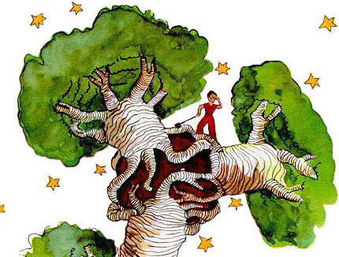

-
Notes on Death and the Resurrection of Children’s Fiction
by Audrey Schomer February 29, 2012
Parable of the Sower
By Octavia Butler
Warner Books, 1993A Wrinkle in Time
By Madeleine L’Engle
Farrar, Straus & Giroux, 1962The Little Prince
By Antoine de Saint-Exupéry
Reynal & Hitchcock, 1943The morning after Raymond Blanco drowned in the ocean, I scanned spines. I selected books the way a woman struck suddenly blind rediscovers the house of her upbringing. I found, happily, that they were the books I’d loved as a little kid. They were the books with a lifetime shelf life, because they contained intangible worlds of wisdom. I gravitated to each as to a talisman, pulled into its orbit by some steady hand of intuition. In the days and weeks that followed, it became essential to know just how I should continue. It’s hard to know what to do when faced with the irrevocable inevitable, a smiling scythe in the wheat. Death comes to you, and it’s no bluesy Hallmark abstraction when it does. Since life is expendable, I should spend it right. In the wake of the freak death of a friend, I felt a need to return to my most basic roots, those laws that governed me in the beginning.
The book I drew down that first morning was Octavia Butler’s Parable of the Sower, whose extreme life-and-death stakes matched the intensity of my own shock. I was amazed to discover the occasional freak bull’s-eye serendipity, winking obscurely at me through the text. A chapter heading here, “Drowning people sometimes die fighting their rescuers.” My impulse to amplify these random insignia, of course, stemmed from my absurd desperation to unearth an answer to life’s most despicable question. I hunted for the hidden like a war historian, scouring chinks in the wall for the scrawled messages of the dead.
Parable’s heroine is seventeen-year-old Lauren Olamina, an uncommon minister’s daughter in an apocalyptic future of environmental and economic strife. Her community is gated against the world outside, a hellish Los Angeles, where people languish in poverty, bird-boned girls are doped, raped and left for dead in the street, and painted-faced sadists run amok on sprees of arson. Lauren has not only a remarkable intelligence, but a disorder known as hyperempathy — the ambivalent damages of her pregnant mother’s drug addiction — which causes her to feel whatever pain and pleasure she witnesses. For years, she has been devising an alternative faith, its core beliefs she records in a book, Earthseed: The Books of the Living. Her first tenet epitomizes her faith in poetry:
All that you touch
You Change.All that you Change
Changes you.The only lasting truth
Is Change.God
Is Change.Earthseed is a daring reformulation. Life, we notice, seems to work in this revolutionary way in which something will happen that compels a second imagining. Not merely an invocation of past knowledge, this happening induces a spontaneous act of healing and adventure: it asks us to turn out to the unknown when what we would like to do is to return to the warm bed of the familiar, which is in essence, a grave of self. To cease changing is to cease living. We are ourselves, and we are something else waiting to be. Earthseed was a profound reminder to me to make peace with this ruling government, in which the only way to live in accordance with its laws is to consistently adapt, even and especially in a universe that is so frequently inconsistent, as Lauren writes:
A victim of God may,
Through learning adaptation,
Become a partner of God.In Parable of the Sower, death is a constant, looming threat in which a moment’s inopportune distraction can be fatal. Vigilance is vital. Yet, while death is not taken lightly, neither are these survivors able or willing to be debilitated by the loss of human life, even those lives closest to them. To save herself, Lauren herself must abandon her dead father, stepmother, brothers, and the lover she might have married. There is no alternative; she is aware of the costs. She maintains faith, ultimately, in her life’s bold mission to build a community of Earthseed followers. The Biblical parable of the sower describes a sort of Johnny Appleseed who scatters seed over various earth. Fruit, apparently, depends not on the quality of the seed, but on the ability of the earth to be an open recipient. At the heart of this dark novel, pervaded by the reality of death and of humanity’s old supports dissolved, is a powerful drive to create for the sake of the living.
A Wrinkle in Time features another young heroine, Meg Murray. Blessed with scientist parents and a genius little brother, Charles Wallace, Meg nevertheless believes herself to be defective. Aided by three celestial beings, Meg, Charles and their friend Calvin begin their intergalactic journey to rescue her father from enslavement on the planet, Camazotz (with its grotesque Mayan meaning, death bat). Camazotz has fallen under the fatal influence of the star-engulfing Black Thing and is ruled by the dark mind of its sadistic dictator, IT, who takes the form of a giant brain.
On Camazotz, IT controls all of life. Grimly, the inhabitants of Camazotz enact an identical routine, filled with dread and empty of passion, pedaling nowhere special in time with the fascist throb of a dislocated brain. The universal danger, the children soon realize, is to succumb to the cruel and efficient wants of the regime. Yet when young Charles enters the mind of IT, Meg’s love is the only factor capable of saving him from being lost forever to its void. Risking self-sacrifice in a confrontation with IT’s self-effacing mono, Meg commits the greatest act of rebellion possible: she loves the unlovable. Buried beneath IT’s duplicitous garb was the true Charles, waiting to be seen. Despite her self-doubt, Meg’s own rebelliousness against authority gives her the strength to disarm injustice. In a beautiful way, because she is her brother’s keeper, Meg fully inherits her self-worth, and so fully embodies her own life. Once she has experienced this phenomenon of total self-affirmation, there can be no alternative. She has been called to life.
The Little Prince was the final literary reverberation, echoing off the back wall of my childhood. The first time I’d read it, at 11, it was about a boy, because I was young. The second, at 19, it was about love, because I was in love. This time around, it was about death. And because it was about death, it was about everything else, too, juxtaposed with death. It became, finally, an instruction manual in how to live, which without this awareness of death, we would not be so moved to contemplate such essential questions.
I understood, too, that this little book is not simply about death, but about the loss of a friend, a rare being so pure of spirit as to seem fragile. It’s the desert snake, “a coil of gold, the color of the moonlight,” who feels such compassion for the little prince, saying, ‘You move me to pity — you are so weak on this Earth made of granite….I can help you, some day, if you grow too homesick for your own planet.’ Although the snake speaks altruism, he means death. The prince is thoughtful when he inquires why it is he always speaks in riddles, and the snake responds, “I solve them all.”
I have never been so disquieted by the mystery of life — its deep riddles — than in the aftermath of Ray’s death. There were unfathomable riddles of Raymond’s life I will never surmise, those riddles that death solved for him which have been abandoned to an unseen oblivion. For me, though, and all the ones the dead leave behind, death is still the greatest. Ray, himself, is a riddle I try evermore to solve. And beyond Ray, my own self, who I am, why I’m here, why any of us are at all, the absurd and hilarious accident of all this shit and beauty, and what happens when I slip also into the vast undercurrent that carried away my friend a September Sunday.
The mystery — what the riddle taunts with revelation — may remain, but it doesn’t intend to be described. What makes the desert beautiful is that somewhere it hides a well. All things being a cloak for their essence, as the desert is a cloak for an unseen well, death itself may also be an illusion. Hence, the prince’s warning to our narrator as he prepares himself, in the end, to die, “It’ll look as if I’m dead, but it won’t be true.” For him, death is a return to his home, a star where he hopes to find a rose unharmed.
When I seek the well in life, I move in accordance with its constant state of miracle. My feet meet the no longer desolate earth with a sense of hopeless joy and humor. The little prince is a savior to our hero, both friend and teacher to a jaded narrator who could very nearly have become one of those wasteland-of-imagination adults he so despised in his younger years as a whimsical young artist. By virtue of the way he lived and loved, because he was my friend as not many are in life, Ray was this for me, too: a beautiful alien prince who was curious about the nature of the universe and baffled by its corruption. He was a vigilant gardener of the heart, who uprooted destructive baobabs and tended to a flower all his life. My gratitude for his life is such that, in the end, I’m only sorry his visit was so short.
Raymond R. Blanco, Jr. drowned on September 25, 2011 in Ocean City, NJ. He was 27 years old.